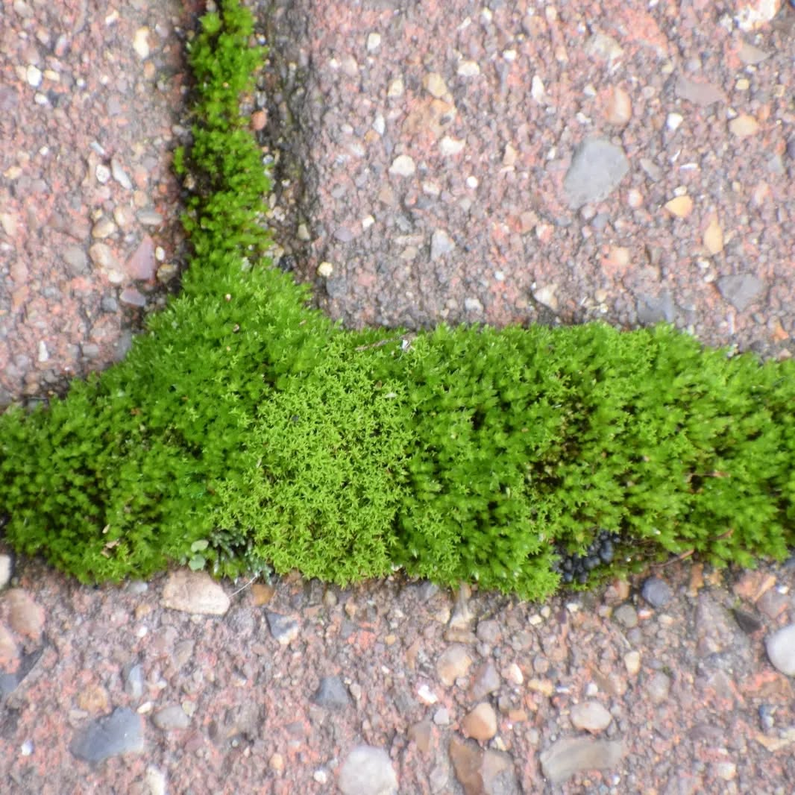
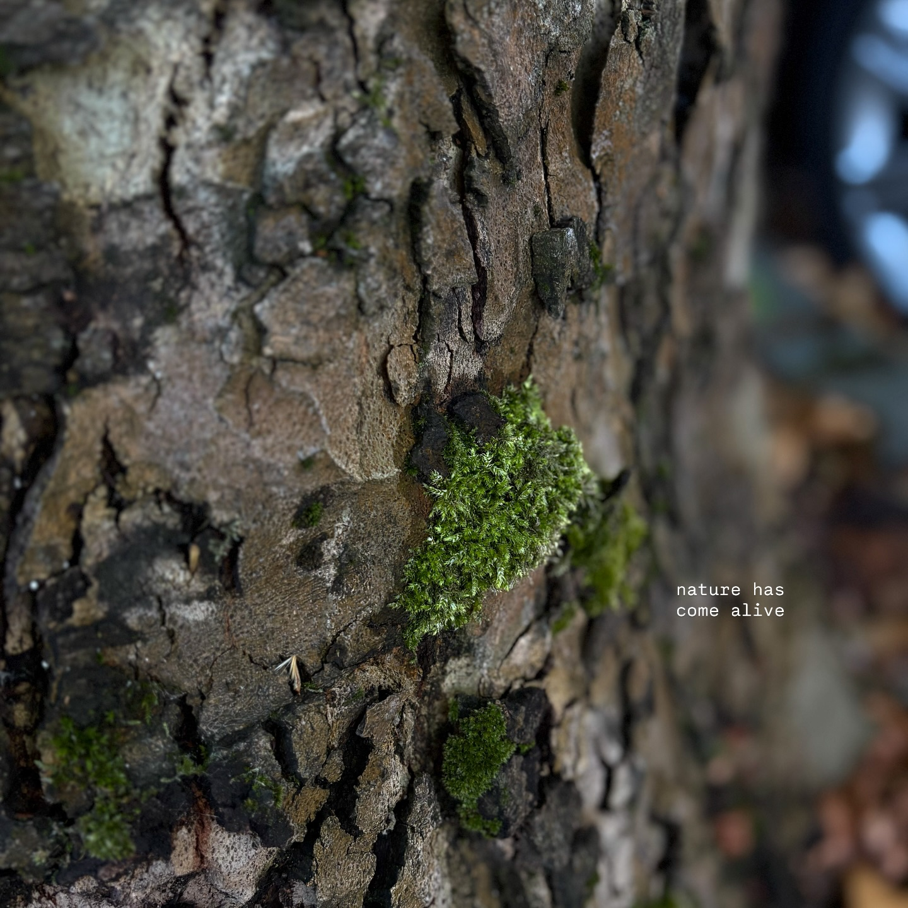

Work
Every drawing here began as a pause on a walk.
Open one and stay with it. Go in until the moss comes apart into single lines, each one put down by hand. The small bar in the corner will tell you how little room all of it takes.
Series 01
City Mosses
2024 – 2025 · 6 platesWild patches found in nobody's land. Cracks, kerbs, the corners no one tends.


Series 02
Whispers on Bricks
2025 · 3 platesSix months beside one boundary wall, listening to what settled where two bricks meet.

Series 03
Forest Floor
2021 – 2022 · 4 platesBefore the pavements, the woods. Everything growing over everything else, and no one in charge.

Series 04
Garden Plans
2023 · 2 platesGardens drawn from above, each bed and path set down like a line in a letter.
Series 05
Overgrown Houses
2019 – 2020 · 2 platesThe earliest drawings. Houses the green has begun to take back, one creeper at a time.


Field notes
Seen on walks
PhotographsBefore the pen, the walk. These are the things that stopped her, photographed where they grew.



